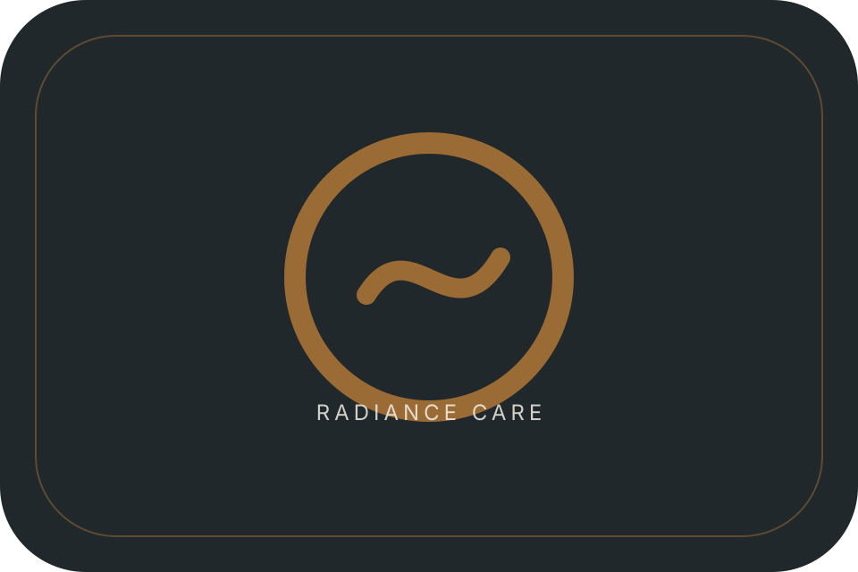

Radiance / Care Hero
Personalized care
Care begins with listening, then moves toward thoughtful planning and clear next steps.
Radiance / Care Meaning
What care means
Your goals, comfort, routine, and expectations all matter.
- Goals
- Comfort
- Routine
- Expectations

Radiance / Listening First
Listening first
A good plan starts with understanding what feels right, realistic, and comfortable for you.
Radiance / Care Steps
Care steps
A simple process makes each next step easier to understand.
- Assess
- Plan
- Guide
- Review
Radiance / Related Services
Related care
Explore skin guidance or laser suitability next.
Radiance / Statement Break
Care needs calm
The right pace helps decisions feel clearer.
Radiance / Safety Comfort
Feel comfortable
Questions, limits, and expectations can all be discussed before any decision is made.
Radiance / Education Preview
Learn before care
Read practical guidance before choosing your next step.
Radiance / Prepare Consultation
Before you start
Bring your goals, routine, questions, and comfort level into the conversation.
- Your goals
- Your routine
- Your questions
- Your comfort
Radiance / Final CTA
Begin with care
Start with a conversation and choose the next step with clarity.